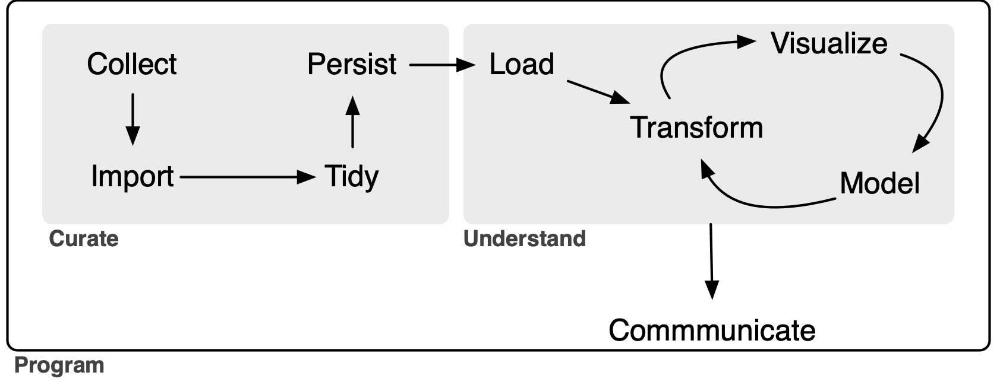

library(tidyverse)
library(DBI)
library(farr)
library(googlesheets4)
library(arrow)
library(dbplyr)Data collection (with spreadsheets)
Data curation
Spreadsheets
This note also completes the three-part series of notes written to address gaps in the coverage of Gow and Ding (2024a) relative to Wickham et al. (2023).1 Previous notes covered hierarchical data and dates and times and this note covers spreadsheets. As discussed in a post on LinkedIn, one goal of Empirical Research in Accounting: Tools and Methods (co-authored with Tony Ding) is to provide a pathway to mastery of the contents of R for Data Science.2
In writing about data science there is a definite tendency to emphasize the “sexy” aspects, such as machine learning algorithms or fancy statistics. This is the case even though it seems to be widely understood that a lot of the critical work involves unsexy tasks related to the organization of data. One resource that bucks the trend is R for Data Science (Wickham et al., 2023), which eschews the sexy stuff in providing excellent materials for learning how to tidy and transform data to generate insights.
But even Wickham et al. (2023) draws the line at data collection.3 Figure 1-1 of Wickham et al. (2023) suggests that the “whole game” of data science kicks off with Import.4 But where do these imported data come from? Who collected them? Often data analysts are blessed with ready-to-import data sources. But sometimes the only way to get data is to Collect them ourselves.5
At first impression, it might seem that data collection is too dull a topic for data scientists to think much about and there is not much for writers of educational materials (e.g., textbooks) to say on the topic. But Broman and Woo (2018) seems to suggest otherwise. While its title is “Data organization in spreadsheets”, Broman and Woo (2018) could equally well be entitled “Data collection (with spreadsheets)” (and I have used the latter as the title for this note). Broman and Woo (2018) is a concise, well-written paper that provides a number of best practices for data collection and I highly recommend it.
However, when I first saw Broman and Woo (2018) online in 2016, I had a number of thoughts. I dutifully filed these as (somewhat obnoxious) issues on Karl Broman’s GitHub repository, but had no real expectation that Karl would address these.6 Instead I figured that I would write a short follow-up paper digging more deeply into issues that interested me. This document is that follow-up paper … a mere nine years later! In this note, I provide a different perspective on data collection—albeit one that I hope is complementary to that in Broman and Woo (2018)—with a detailed extended case study to illustrate the ideas I discuss.
This note also completes the three-part series of notes written to address gaps in the coverage of Empirical Research in Accounting: Tools and Methods (Gow and Ding, 2024b) relative to R for Data Science.7 Previous notes covered hierarchical data and dates and times and this note covers spreadsheets. As discussed in a post on LinkedIn, one goal of Empirical Research in Accounting: Tools and Methods (co-authored with Tony Ding) is to provide a pathway to mastery of the contents of R for Data Science.8
The application I study here uses spreadsheets as part of a process of linking data on IPOs in the United States with auditor IDs, as found in Form AP data.9 I also provide brief sketches of the use of spreadsheets in data collection drawing on research projects I have participated in.
In writing this note, I use the packages listed below.10 This note was written using Quarto and compiled with RStudio, an integrated development environment (IDE) for working with R. The source code for this note is available here and the latest version of this PDF is here.
1 Spreadsheets and data science
My sense is that a lot of the use of spreadsheets in data science falls into one of two scenarios. In the first scenario, the data are provided in a spreadsheet format that is outside the control of the reseacher. In the other scenario, spreadsheets are used by the researcher as part of the data collection process.
1.1 Scenario 1: Importing spreadsheet data
Chapter 20 of Wickham et al. (2023) covers spreadsheets with an emphasis on importing data provided in spreadsheet form—either in a Microsoft Excel file or in a Google Sheets document. While the chapter in Wickham et al. (2023) does cover writing data to Excel or Google Sheets, it does not discuss why you would want to do this.11
The coverage provided in Wickham et al. (2023) is excellent and I refer readers to that book for details on importing spreadsheet data. However, a weakness of Chapter 20 of Wickham et al. (2023) is its limited guidance on what I would regard as essential best practices for importing spreadsheet data.12 So I provide some guidance on these here.

First, the import process should be done as much as possible in a script that allows the whole process to be repeated. Importing spreadsheets falls clearly into the Curate portion of the extended “whole game” of a data analysis workflow depicted in Figure 1.13 The whole Curate process should be documented and scripted as much as possible. For example, if the spreadsheet data come from a URL for a Microsoft Excel file, then the download step should be [if possible] part of the script.
Second, the source data files should not be modified in any way. While this point is closely related to the previous one, I believe that it warrants specific emphasis. Clearly one should not be opening Excel files and modifying data by deleting columns or reformatting values, as these steps are undocumented and not repeatable in an automated fashion. My advice here mirrors that of Broman and Woo (2018, p. 7) in a slightly different context: “Your primary data file should be a pristine store of data. Write-protect it, back it up, and do not touch it.”
Even simply opening the source Excel files in Excel and clicking save can modify the underlying files in ways that affect later parts of the data science workflow. I had one project where the source data appeared to be .xls Excel files, but were in fact simply structured text in HTML format. Scripts written on this basis performed better than ones that read them as Excel data.14 However, when updated spreadsheets were received from the vendor they first passed through the data team at the institution I then worked at and my scripts no longer worked. The data team had “helpfully” opened the files in Excel and saved them before sending them along to me. I had to insist that the data team pass along the data files exactly as they had received them without “helpful” steps in between.15
The deleterious effects of “simply” opening a file in Excel and saving it can be seen by comparing Table 1 with Table 2. Table 1 shows the original data, while Table 2 shows the file created by Excel. As can be seen, Excel changed the first column so that the data are no longer in a consistent (d/m/yyyy) format, mangled the first cusip value, and messed up the encoding (and I wasn’t even using Windows!) so that the Korean name in the third row is no longer legible.
| test_date | cusip | result | name |
|---|---|---|---|
| 1/7/2006 | “945324E7” | 1.7 | Bob |
| 8/3/2013 | “12345678” | 2.6 | Sarah |
| 28/4/2016 | “23456789” | NA | 철수 |
| test_date | cusip | result | name |
|---|---|---|---|
| 1/7/06 | 9.45E+12 | 1.7 | Bob |
| 8/3/13 | “12345678” | 2.6 | Sarah |
| 28/4/2016 | “23456789” | NA | “_Êö÷ |
1.2 Scenario 2: Using spreadsheets for data collection
While Chapter 20 of Wickham et al. (2023) focuses on importing data from spreadsheets, Broman and Woo (2018) focuses on the use of spreadsheets for data collection. Interestingly, Wickham et al. (2023) does not discuss primary data collection in any detail and Broman and Woo (2018) does not explicitly cover the process of importing data into statistical analysis software. However, it does seem implicit in Broman and Woo (2018) that importing data into such software will be part of the process. For example, Broman and Woo (2018, p. 9) suggest that “data rearrangement is best accomplished via code (such as with an R, Python, or Ruby script) so you never lose the record of what you did to the data.” In terms of Figure 1, Broman and Woo (2018) is largely about Collect and Wickham et al. (2023) picks up with Import.16
I view this note as building on Broman and Woo (2018) by adding some additional recommendations, linking data collection with data importation à la Wickham et al. (2023), and providing a more comprehensive use case to highlight some issues and ideas not addressed by either Broman and Woo (2018) or Wickham et al. (2023).
Broman and Woo (2018) appears to emphasize cases where the user of the data is entering the data directly. However, a very common use case I have encountered is one where I (along with collaborators) will be using the data, but the data are being entered by someone else (perhaps several others).
Additionally, references in Broman and Woo (2018) to things such as Serum_batch1_2015-01-30.csv, Mouse153 and glucose_6_weeks suggest a setting of collection of observations and measurements from scientific experiments. In contrast, a setting more familiar to me is that of collecting relatively large amounts of somewhat messy data from documents found on the internet. Typically, researchers need other people to collect these data because of time constraints and because either the data are too messy to be collected in an automated fashion with sufficiently low cost and high quality or their collection requires some element of judgement.
This note aims to expand on and refine the advice provided by Broman and Woo (2018) for situations where others—such as data entry specialists or research assistants—are entering data into spreadsheets and where the data are coming from messy sources rather than measurements from lab experiments. Broman and Woo (2018) provide a list of twelve recommendations. In this note, I will provide guidance specific to the setting I examine here and then follow that with comments on the recommendations in Broman and Woo (2018) in light of the different context.
Considering this context helps address the question that many users might have at this point: Why use spreadsheets at all? Given that spreadsheets have all these problems, it might seem better to use some other approach. For example, why not use a web form that is used to populate a database? I think the answer lies in a couple of points.
First, many researchers are collecting data but do not have access to the skills needed to stand up a web page that allows data to be collected and put into a database. For all their problems, using spreadsheets removes the need for such skills.
Second, many data collection tasks are unclear. Precisely what data will be collected? What values are valid in certain columns? What strange cases need to be addressed and how? In such situations, often the best approach is to just start collecting data and adapt over time. Spreadsheets are often the best tool for such situations. Columns can be added later on. Data validation rules can be tightened and loosened as circumstances dictate. This can be much easier than bringing the web-and-database developer back in to add new fields to the forms and new columns to the database tables.
Additionally, data collection often needs to be quite free-form. For example, maybe it make sense to drop a link to a document to explain a classification decision made in another column. Spreadsheets allow this easily.
1.3 Other use cases for spreadsheets
Before moving on to consider data collection using spreadsheets in more detail, I briefly discuss other ways that spreadsheets are often used by data analysts.
1.3.1 Spreadsheets for modelling
Spreadsheet tools such as Microsoft Excel and Google Sheets are the mainstay of certain kinds of analysis, including financial modelling and valuation. Spreadsheets also allow people who use them for other reasons to easily run Monte Carlo simulations and the like. I view these uses as legitimate, but place them slightly outside the scope of data science in the sense implied by Figure 1, hence beyond the scope of this note.
The one word of caution I would offer is that one should not fall into the trap of thinking “I use Excel for modelling, so maybe I should also use Excel for statistical analysis.” The shortcomings of Excel for statistical analysis are well-documented and need not be repeated here (see Broman and Woo, 2018 for some leads).
I will also note a couple of additional points. First, even if (say) Microsoft Excel is your preferred tool for producing financial or valuation models, there can be value in replicating analysis in something like Python or R. In 2005 or 2006, I was working with Morgan Stanley to produce a valuation model that could be used by institutional investor clients with data generated by Morgan Stanley research analysts. I would produce a version of the model in Excel and programmers would translate it into C++ code. In one conference call, one of the programmers mentioned that they had detected the change in formula after a certain number of years and implemented that in the code. Aargh! This change in formula was simply a spreadsheet error on my part that became all the more obvious when the logic was transcribed from Excel formulas to C++ code. The error was quickly rectified.
Second, there is a world of best practices to be followed with the use of spreadsheets in financial and valuation modelling that are deserving of (at least) a note of their own. When I worked at corporate finance consulting firm Stern Stewart in the late 1990s, a big part of the training of new analysts and associates was inculculating some of these best practices, such as separating inputs from calculations and documentating data sources and rationales for approaches. A lot of ideas used there are analogues of ideas found in discussions of reproducibility in data science.
1.3.2 Spreadsheets for data analysis
While Broman and Woo (2018) does mandate “No Calculations in the Raw Data Files”, this is coupled with a more lenient piece of advice (Broman and Woo, 2018, p. 7): “If you want to do some analyses in Excel, make a copy of the file and do your calculations and graphs in the copy.” I argue that this is actually not a good idea at all.
If the idea is that the analysis will be the data analytical form of brainstorming that will not form the basis of anything beyond that, I think that is fine. But if the calculations and graphs in the copy end up going in output of some kind (e.g., a report or a paper), then the data in the copy become the de facto canonical version of the data. If the original data are updated or corrected, there will often be no easy way to incorporate the associated changes into the analysis. Also it will often be difficult to be sure that the raw data have been unchanged. Having the original data as a “pristine store of data” (Broman and Woo, 2018, p. 7) does not help much if the data actually used have been corrupted in some way (e.g., by accidentally typing a value into a cell).17
1.3.3 Spreadsheets for organizing output
The final use case for spreadsheets that I will discuss is the use of spreadsheets for producing output, such as tables and graphs. Many researchers who use statistical packages such as SAS or Stata reach the limits of their skills with those packages when it comes to producing plots or tables of statistical analyses for inclusion in papers or reports. Such users will often turn to packages such as Microsoft Excel to produce this kind of output.
I would recommend that readers of this note consider working on their data science skills to obviate the use of Excel for this “last mile” of the data analysis journey for a number of reasons.
First, using spreadsheets for this part of the process inevitably breaks the reproducibility of any analysis. The Excel workflow for making a plot is roughly:
- Save data for analysis
- Open data in Excel spreadsheet.
- Using your mouse, highlight the data to be used in graph.
- Click one of the graph icons.
- Make a number of seclections in various dropdown menus and checkboxes to produce the desired plot.
- Copy plot to Microsoft Word document.
Now, suppose the data change. The whole process needs to be repeated again and it is very unlikely that any step (save perhaps the first one) is associated with any documentation whatsoever.
One consequence of using a manual workflow is that analyses can quickly become inconsistent with each other, as it is often seems not worthwhile to update earlier analyses when data change.
Second, using spreadsheets for this part of the process can lead to errors. Manual steps are easy to mess up and I’ve seen cases where column labels are switched or the signs of coefficients are wrong because they were updated manually.
Finally, the plotting functionality of Excel will generally pale in comparison to what is available in Python or R (or even Stata).
A lot of researchers seem unaware that it’s even possible for modern statistical packages to produce production-quality output without manual intervention at every step.
2 Google Sheets
One of my primary recommendations is to use Google Sheets rather than Excel spreadsheets and I explain that recommendation in this section. While it seems somewhat less than ideal to recommend an approach that relies on a product from one company, I am not aware of an equivalent to Google Sheets in terms of functionality at this time.18
Google Sheets offers a number of benefits over Excel even for a single user. For example, Google Sheets has some functions (e.g., support for regular expressions) that can greatly facilitate data entry. Also I haven’t had encoding issues with Google Sheets of the kind we saw above with the Korean name 철수 being mangled into _Êö÷. We saw above that Excel can mangle CSV files in ways that Google Sheets will not. I would go so far as to provide the blanket advice: “Don’t use Excel to handle CSV files.”
But the benefits of Google Sheets become especially clear when there are several people working with the data, such as multiple researchers and possibly many research assistants.
One issue I have encountered with Excel is version control and these issues are particularly acute when there are multiple people involved in data collection. In my experience, the standard approach to version control for users of products like Microsoft Word or Microsoft Excel involve two elements. First, there is some implicit shared mental note about who has “the document” at any given time. When Anne has “the document”, Bob and Clara know that they should not be editing it.
This is imperfect for many reasons. For one, the implicit shared mental note system is not perfect. So problems arise when Bob starts editing the literature review section of document while Anne is busy reworking the introduction: “I didn’t realize that Anne was working on that. I guess we will have to figure out how to combine my changes with hers.” Second, Microsoft Office fans often share versions via email and problems can arise when Clara starts editing ABC_12-24-24_anne_final_v_21.docx rather than the copy Anne sent via email with a “please use this version instead” subject line (ABC_12-25-24_anne_updated_v_23.docx) the next day.
All these issues are even worse with Microsoft Excel because there are no “track changes” or “compare documents” features to assist with clean-up of messes from Bob-or-Anne-edited-the-wrong-version situations. These issues largely disappear with Google Sheets.19
Another benefit of Google Sheets is that access to the data is continuous. In a Google Docs setting, all co-authors can have access to the document and Bob can edit the literature review while Anne punches up the introduction.20
Relatedly data access is ensured. There is no risk that the Excel spreadsheet containing the data ends up on the computer of a former research assistant who is no longer available. Knowing that the final data file is C:/Desktop/Best Project Ever/data collection_final_v3_3-4-1997.xls does not help if that computer was wiped when the RA left for a better job.21
Having continuous data access can be particularly helpful if research assistants are doing much of the data collection. One does not need to email the research assistant saying “please send me the updated spreadsheet before you go home today, as I’d like to run some numbers.” The spreadsheet is right there.
Also, one can monitor data entry in real-time. Importing data using googlesheets4 and generating plots using ggplot2 can happen without bothering the RAs in any way. I have worked on projects where there were dozens of research assistant (RAs). While there were detailed instructions, one cannot be sure that RAs will read them. Nor can one anticipate all the ways that things can go wrong. With Google Sheets, one can import data as it is being collected and discover issues along the way. For example, one can email the relevant RA (e.g., “Please don’t put values like ‘2013-03-23 (need to check)’ in the date column”), and perhaps update instructions according.
Sometimes data collection tasks involve an initial learning curve for each RA, but the work can be so tedious that productivity declines over time. With Google Sheets, it is relatively straightforward to monitor productivity over time. In one case, we hired RAs on a week-by-week basis and found that RA productivity would decline after two weeks and we would not invite RAs back when that happened.22
Both Excel and Google Sheets offer data validation functionality. But sometimes it is not possible to anticipate the range of valid values. With Google Sheets, adding data validation on the fly is easy. In the example above, we could add a validation rule requiring that date values be valid dates and insert an additional column for notes to store comments like the “need to check” above
With Google Sheets, multiple people can enter data at once. An alternative might be to have each person have their own Excel file, but this introduces complexity. One approach would work with a single sheet shared by multiple users and have RAs fill in an RA column with their names for any rows for which they collected data.
With Google Sheets, data access can be added and removed with ease. Almost everyone has a Google ID and this can be used to grant access. Removing access when it is no longer needed is very simple too.
In short, Google Sheets is simply a superior product to Microsoft Excel for data collection. Still Excel has its fans. In the case of the stranded Excel file I mentioned above, the RA in question chose to download the provided Google Sheets file as an Excel file because he was “more comfortable” with the Excel interface. The RA in question worked for a co-author, not for me, so I wasn’t as insistent as I should’ve been. Today I would configure the Google Sheets document so that downloading would not even be possible.
3 Case study: Linking IPOs with auditor IDs
The best way to illustrate some key points about using spreadsheets to collect data is to explore a specific example in greater depth. The example I study involves collecting data from various sources to facilitate the matching of IPOs of companies on US exchanges with the firms that provided audits for those companies, where an audit firm is identified using the identification number provided by the Public Company Accounting Oversight Board (PCAOB) in the United States.
The data on IPOs come from the Nasdaq website and the data on audit firms come from the Form AP data discussed in an earlier note.
I will use DuckDB to work with data in this example, so I create a connection to an in-memory database here.
db <- dbConnect(duckdb::duckdb())3.1 IPO data
Nasdaq provides information about IPOs on its website. I have organized these data in two parquet files: ipos.parquet and ipo_experts.parquet. A copy of the ipos.parquet file can be found at https://go.unimelb.edu.au/2rq8 and a copy of the ipos_experts.parquet file can be found at https://go.unimelb.edu.au/hrq8. If you want to follow along with the code below, you could download these data files into the nasdaq schema of a data repository organized along the lines of that I discuss in Appendix E of Empirical Research in Accounting: Tools and Methods and then load them into a DuckDB database using code like this:
ipo_experts <- load_parquet(db, "ipo_experts", "nasdaq")
ipos <- load_parquet(db, "ipos", "nasdaq")Alternatively, you could put these two files in, say ~/ipo_auditors, and then load them as follows:
ipo_experts <- load_parquet(db, "ipo_experts", data_dir = "~/ipo_auditors")
ipos <- load_parquet(db, "ipos", "nasdaq", data_dir = "~/ipo_auditors")For example, details about the IPO of Galmed Pharmaceuticals Ltd. (GLMD) on 13 March 2014 can be found at https://www.nasdaq.com/market-activity/ipos/overview?dealId=926632-74581 and these data are also found in the ipo.parquet file. There are 4,409 rows in ipos.parquet and each row represents an IPO identified by the primary key column dealID.
The Nasdaq page also includes information about the “experts” associated with each IPO and this information is contained in ipo_experts.parquet. I collect some statistics on these deals in expert_counts and show the results in Table 3. As can be seen from the n_deals column, every IPO has an auditor, a company counsel, and a transfer agent, with some deals having more than one of these. It can be inferred from Table 3 that the typical IPO has multiple underwriters.
expert_counts <-
ipo_experts |>
group_by(role) |>
summarize(n_deals = n_distinct(dealID),
n_rows = n(),
.groups = "drop") |>
arrange(desc(n_deals))| role | n_deals | n_rows |
|---|---|---|
| TransferAgent | 4,409 | 5,901 |
| Auditor | 4,409 | 4,621 |
| CompanyCounsel | 4,409 | 4,874 |
| LeadUnderwriter | 4,313 | 10,110 |
| UnderwriterCounsel | 4,296 | 4,682 |
| Underwriter | 2,973 | 13,190 |
Not every deal has a lead underwriter, but from Table 4, it can be seen that all deals without a lead underwriter have at least one underwriter.
| role | n_deals | n_rows |
|---|---|---|
| Auditor | 96 | 115 |
| CompanyCounsel | 96 | 109 |
| Underwriter | 96 | 249 |
| TransferAgent | 96 | 148 |
| UnderwriterCounsel | 1 | 1 |
The information for GLMD in the ipo_experts.parqueet file is shown in Table 5, where we see a number of things.
| expertName | role |
|---|---|
| Brightman Almagor Zohar & Co., a member firm of Deloitte Touc... | Auditor |
| Brightman Almagor Zohar & Co., a member firm of Deloitte... | Auditor |
| Greenberg Traurig, P.A. | CompanyCounsel |
| Maxim Group, LLC | LeadUnderwriter |
| VStock Transfer, LLC | TransferAgent |
| Feltl and Company, Inc | Underwriter |
| MLV & Co. LLC | Underwriter |
| Ellenoff Grossman & Schole LLP | UnderwriterCounsel |
First, there appear to be “two auditors”, albeit with names that appear to differ only in the point at which the names are truncated with “...”. Second, there are no identifiers for the experts other than their names. Names are problematic for many reasons. Firms can change names. Names can be abbreviated in different ways or misspelt or change in subtle ways that are not obvious to a human reader, but that make them unusable as identifiers in code. Third, at least for some expert types, there can be more than one expert for a given IPO.
Before moving onto the data on auditors provided on Form APs, I compile data on auditors and IPOs from the IPO data and store it in ipo_auditors.
ipo_auditors <-
ipos |>
select(dealID, companyName, CIK, pricedDate, CompanyAddress) |>
inner_join(ipo_experts, by = "dealID") |>
filter(role == "Auditor") |>
rename(cik = CIK) |>
select(-role) |>
compute()3.2 Form AP data
According to the PCAOB, “registered audit firms are required to submit Form AP, Auditor Reporting of Certain Audit Participants, to disclose the names of engagement partners and other accounting firms that participated in their audits of public companies.” The PCAOB provides a database constructed from Form AP filings on its website and I have written about this in a previous note. The Form AP database is contained in the file form_aps.parquet that I have made available at https://go.unimelb.edu.au/4iq8.
Again you could download this data file into the pcaob schema of a data repository organized along the lines of that I discuss in Appendix E of Empirical Research in Accounting: Tools and Methods and then load it into a DuckDB database using code like this:
form_aps <- load_parquet(db, "form_aps", "pcaob")Alternatively, you could put this file in (say) ~/ipo_auditors and then load it as follows:
form_aps <- load_parquet(db, "form_aps", data_dir = "~/ipo_auditors")We can collect auditor IDs associated with each CIK from form_aps. Of course, firms change auditors over time, but if we are interested in the auditors at the time of IPO, it might make sense to pick the first auditor associated with each CIK.23 I close this subsection by creating first_auditors, a data frame with information on the first auditor for each issuer:
first_auditors <-
form_aps |>
group_by(issuer_cik) |>
filter(audit_report_date == min(audit_report_date, na.rm = TRUE)) |>
ungroup() |>
rename(cik = issuer_cik) |>
mutate(cik = if_else(cik == "9999999999", NA, cik)) |>
select(cik, firm_id, firm_name, firm_country, audit_report_date) |>
compute()3.3 Creating the link table
I now move onto the task of creating a link table between the IPO data and the Form AP data. Even if the ultimate goal is to produce a data set drawing on data on both IPOs and auditors, it is important to view the production of a link table as the final product of the linking task. In its simplest form, a link table contains primary-key values from each of the two data sources with the appropriate primary key being driven by the level at which observations are being linked.24 In the current context, we want to link each IPO—identified by dealID—with the auditor in the Form AP database.
In the Form AP database, an auditor is identified by firm_id. It interesting to note that this is the case even though firm_id is in no way a primary key for the form_aps table. Instead, we might think of firm_id as the primary key of a hypothetical auditors table and we can create this table ourselves as follows:
auditors <-
form_aps |>
group_by(firm_id) |>
window_order(desc(audit_report_date)) |>
mutate(firm_name = first(firm_name),
firm_country = first(firm_country)) |>
distinct(firm_id, firm_name, firm_country) |>
compute()By construction, firm_id is the primary key for this auditors table. I include the names and countries for each audit firm to facilitate data collection later on. Because firms can change names over time, I use the latest name on form_aps for each firm_id.25
3.3.1 Name-based links
I start by matching the data on IPOs with data on auditors using CIKs. I conjecture that, if a match between expertName (from the IPO data) and firm_id and firm_name (from the Form AP data) shows up many times, there’s a good chance that it’s valid match. In constructing top_matches, I require that a match be present at least five times. This threshold is arbitrary, but it’s just a starting point in two ways. First, I will apply some judgement to the matches before flagging them as valid. Second, I will come back to additional candidate matches in subsequent analyses.
top_matches <-
ipo_auditors |>
left_join(first_auditors, by = "cik") |>
filter(!is.na(firm_name)) |>
count(firm_id, expertName, firm_name, sort = TRUE) |>
collect() |>
filter(n >= 5)I will use a Google Sheets document to collect the data. In the past in similar situations, I have often taken data such as that in top_matches and exported it to a CSV file that I then open in Google Sheets. Here I instead chose to create a new Google Sheets file using the gs4_create() from googlesheets4:
options(gargle_oauth_email = TRUE)
gs_ipo_auditors <- gs4_create(name = "ipo-auditors")Typing gs_ipo_auditors at the R console provides some information about the (initially empty) Google Sheets document:
gs_ipo_auditors── <googlesheets4_spreadsheet> ─────────────────────────────────────────────────────────────────────────
Spreadsheet name: ipo-auditors
ID: 1m2F4nnhJyg81gj17-h3JWeeSbd4eyRP_SUYlX1OzR-8
Locale: en_US
Time zone: Etc/GMT
# of sheets: 1
── <sheets> ────────────────────────────────────────────────────────────────────────────────────────────
(Sheet name): (Nominal extent in rows x columns)
Sheet1: 1000 x 26After I’ve created the Google Sheets file, I can access it using the key seen in the output above:
gs_ipo_auditors <- as_sheets_id("1m2F4nnhJyg81gj17-h3JWeeSbd4eyRP_SUYlX1OzR-8")I can put the data from top_matches in the Google Sheets spreadsheet using write_sheet(). Note that this code will not work for you with my spreadsheet, as I have not given you writexaccess to that spreadsheet.
write_sheet(top_matches, ss = gs_ipo_auditors, sheet = "top_matches")✔ Writing to ipo-auditors.
✔ Writing to sheet top_matches.The next step I took was to open the spreadsheet in a browser:
gs4_browse(gs_ipo_auditors)I then inserted a new column valid to the right of the existing columns. I also renamed the sheet from top_matches to name_matches.26 I inspected the matches and classified those rows that looked good as valid by putting the value TRUE in the valid column. Most of the first 30 or so rows looked good. But a match of the expertName of “Ernst & Young LLP” with the firm_name of “KPMG LLP” is clearly not valid, so I put FALSE in the valid column for this case.27
Later I added more candidate matches to the name_matches sheet and marked as valid all those that looked good. In some cases it made sense to use the AuditorSearch functionality provided by the PCAOB or to investigate data in SEC filings or the Form AP database.28 Note that I retained all variants of expertName in the IPO data so that name-based matches can be found for such variants.
3.3.2 Problematic name-based links
The next step I took was to look at cases where expertName was associated with more than one distinct firm_id value.
top_matches_processed <- read_sheet(ss = gs_ipo_auditors, sheet = "top_matches")
top_match_problems <-
top_matches_processed |>
filter(valid) |>
group_by(expertName) |>
filter(n_distinct(firm_id) > 1) |>
ungroup() |>
select(-valid) |>
arrange(expertName, desc(n))Looking at Table 6, we see that there are multiple firm_id values for some values of expertName even when we have deemed a match to be valid.29
top_match_problems
| firm_id | expertName | firm_name | n |
|---|---|---|---|
| 34 | Deloitte & Touche LLP | Deloitte & Touche LLP | 368 |
| 1208 | Deloitte & Touche LLP | Deloitte LLP (French Translation: Deloitte S.E.N.C.R.L./s.r.l.) | 8 |
| 1147 | Deloitte & Touche LLP | Deloitte LLP | 5 |
| 42 | Ernst & Young LLP | Ernst & Young LLP | 650 |
| 1438 | Ernst & Young LLP | Ernst & Young LLP | 11 |
| 185 | KPMG LLP | KPMG LLP | 387 |
| 1118 | KPMG LLP | KPMG LLP | 10 |
| 85 | KPMG LLP | KPMG LLP | 8 |
| 5395 | Marcum Asia CPAs LLP | Marcum Asia CPAs LLP | 18 |
| 711 | Marcum Asia CPAs LLP | Friedman LLP | 17 |
| 238 | PricewaterhouseCoopers LLP | PricewaterhouseCoopers LLP | 415 |
| 876 | PricewaterhouseCoopers LLP | PricewaterhouseCoopers LLP | 11 |
Some additional digging (using data in form_aps) confirms that the main explanation is that the different firm_id values relate to different national partnerships of Big Four audit firms. For example, as seen in Table 7, firm_id of 34 is the US arm of Deloitte, while 1147 and 1208 refer to the UK and Canadian operations, respectively.
top_match_problems
| firm_id | firm_name | firm_country |
|---|---|---|
| 34 | Deloitte & Touche LLP | United States |
| 1147 | Deloitte LLP | United Kingdom |
| 1208 | Deloitte LLP (French Translation: Deloitte S.E.N.C.R.L./s.r.l.) | Canada |
| 1438 | Ernst & Young LLP | United Kingdom |
| 42 | Ernst & Young LLP | United States |
| 711 | Friedman LLP | United States |
| 85 | KPMG LLP | Canada |
| 185 | KPMG LLP | United States |
| 1118 | KPMG LLP | United Kingdom |
| 5395 | Marcum Asia CPAs LLP | United States |
| 876 | PricewaterhouseCoopers LLP | United Kingdom |
| 238 | PricewaterhouseCoopers LLP | United States |
3.3.3 Manual links by dealID
One approach to handling these cases would be to get information on countries from the IPO data and use that to distinguish the firm_id values to be used for cases with multiple apparent name-based matches. However, given the relatively small number of non-US matches to be handled, I instead chose to grab the dealID values for those cases and proceed to validate matches on a deal-by-deal basis.
To start with, I identified the most common firm_id value for each expertName. In effect, I will set these as the default for the name-based matches.30
top_match_problem_top_ids <-
top_match_problems |>
group_by(expertName) |>
filter(n == max(n, na.rm = TRUE)) |>
ungroup() |>
select(firm_id) |>
pull()
top_match_problem_top_ids[1] 34 42 185 5395 238I then collect data on all other cases where expertName is in top_match_problems and there is some match to Form AP data (i.e., firm_name is present).
top_match_problems_countries <-
ipo_auditors |>
left_join(first_auditors, by = "cik") |>
filter(expertName %in% top_match_problems$expertName,
!firm_id %in% top_match_problem_top_ids,
!is.na(firm_name)) I then export data related to these matches to an additional tab deal_matches_add that I can use to verify candidate matches for each dealID.
top_match_problems_countries |>
select(dealID, cik, CompanyAddress, firm_id, firm_name,
firm_country, audit_report_date) |>
collect() |>
write_sheet(ss = gs_ipo_auditors, sheet = "deal_matches_add")In this case, I renamed this sheet to deal_matches, added a valid column much as before, and also added additional columns such as sec_filings and notes. I use sec_filings to create a formula-based hyperlink to the SEC filings around the time of the IPO that I can use to check cases where the information in the spreadsheet does not suffice to give me confidence in validating a match. Looking at the formula for cells with “SEC Filings” in the sec_filings column of the deal_matches sheet, you will see that the formula keys off values in cik and pricedDate to make it easy to get to the relevant filings.31 When I locate a filing with the necessary supporting information to make a call on whether a candidate match is value, I can include a link to that filing in the notes column of the spreadsheet.32 It is relatively straightforward to inspect the IPO prospectus and look for the auditor’s sign-off, which will mention the office (e.g., “London, United Kingdom”) that applies and the associated value can be entered under firm_id and valid can be set to TRUE.
I repeated variants on the steps above until the tabs name_matches and deal_matches contained a fairly complete set of data on both name-based and deal-level matches of each IPO with the firm_id value for the auditor at the time of the IPO.
3.3.4 Combining data to produce the link table
Haivng populated name_matches and deal_matches with data on valid matches, the next step is to use the data in these sheets to create a link table between IPOs and firm_id values. We can start by loading data from the two key sheets in our Google Sheets file.
name_matches <- read_sheet(ss = gs_ipo_auditors, sheet = "name_matches")
deal_matches <- read_sheet(ss = gs_ipo_auditors, sheet = "deal_matches")I start by loading the valid deal-level matches of IPOs to auditors. I label these as "manual" matches and store them in deal_matches_processed.
deal_matches_processed <-
deal_matches |>
filter(valid) |>
select(dealID, firm_id) |>
mutate(match_type = "manual")I then process the name-based matches that I will use later on. Note that I give priority to deal-level matches: if an IPO has a valid match in deal_matches, I do not consider a potential match using names in name_matches. This is accomplished by putting all valid matches from deal_matches in deal_matches_processed and then using an anti-join when constructing name_matches_processed.
name_matches_processed <-
name_matches |>
filter(valid) |>
select(firm_id, expertName) |>
inner_join(ipo_auditors, by = "expertName", copy = TRUE) |>
mutate(match_type = "name-based") |>
anti_join(deal_matches_processed, by = "dealID") |>
select(dealID, firm_id, match_type)Having constructed deal_matches_processed and name_matches_processed, we can combine them using union_all().
all_matches <-
deal_matches_processed |>
union_all(name_matches_processed) |>
copy_to(dest = db, df = _, name = "all_matches",
overwrite = TRUE)Based on the data in the spreadsheet, all_matches is effectively the final link table.
3.3.5 Perfecting the matches
So far we have gone through expertName values and linked them to firm_id values. The results of this work are found in the name_matches data frame, which is based on the name_matches sheet in our ipo-auditors Google Sheets file. We have also manually matched IPOs to firm_id values. Because we manually verified these matches, these should be beyond reproach.
However, we might want to go back through the name-based matches to check that these are valid. One idea is to look at name-based links of IPO firms with their auditors that do not have corresponding entries in the Form APs database. It is certainly not the case that every IPO firm (i.e., issuer_cik) will have a Form AP filing made by the auditor (firm_id) it had at IPO. Many firms will change auditors after IPO before making filings such as 10-Ks that are expected to trigger a corresponding Form AP filing. Nonetheless, by looking more closely at these non-matches we should be able to identify cases where, for example, we have matched a Canadian firm with a US auditor rather than the Canadian audit firm that makes the relevant filings on Form AP.
I then compile data on all auditors associated with each issuer CIK, including the names and countries, and store the result in all_ipo_auditors. I store the firm_id, firm_name and firm_country values for each auditor for each firm in list columns.
List columns in DuckDB are very much like their counterparts in R.33 Unfortunately, dbplyr does not provide the interface we need to directly invoke the list() aggregate with an ORDER BY clause. Fortunately, we can use sql() to inject precisely the SQL we need.34
all_ipo_auditors <-
form_aps |>
distinct(issuer_cik, firm_id) |>
inner_join(auditors, by = "firm_id") |>
group_by(issuer_cik) |>
summarize(
firm_ids = sql("list(firm_id ORDER BY firm_id)"),
firm_names = sql("list(firm_name ORDER BY firm_id)"),
firm_countries = sql("list(firm_country ORDER BY firm_id)")
) |>
compute()I collect data on all name-based matches where the matched auditor in firm_id is not among the corresponding firm_ids found in all_ipo_auditors and store the result in no_form_ap_matches.
no_form_ap_matches <-
all_matches |>
filter(match_type == "name-based") |>
inner_join(ipos, by = "dealID") |>
select(dealID, CIK, CompanyAddress, firm_id, pricedDate) |>
distinct() |>
rename(issuer_cik = CIK) |>
inner_join(all_ipo_auditors, by = "issuer_cik") |>
filter(list_contains(firm_ids, firm_id)) |>
compute()Note that once IPOs have been added to the deal_matches tab, it probably makes sense to exclude them from no_form_ap_matches by adding a line such as anti_join(deal_matches, copy = TRUE, by = "dealID") after the inner_join() above.
We can dump the data from no_form_ap_matches into a Google Sheets tab so that we can dig into them more deeply.
no_form_ap_matches |>
mutate(across(c(firm_ids, firm_names, firm_countries), as.character)) |>
arrange(dealID) |>
collect() |>
write_sheet(ss = gs_ipo_auditors, sheet = "all_ipo_auditors")To better understand how one can use the data that have been placed in the all_ipo_auditors tab, I describe how I used the data myself. The first thing I did was to copy the data from the all_ipo_auditors sheet over to the bottom of the deal_matches sheet. Initially I retained the column names in the data that I copied over so that I could check that the columns in the pasted data line up with those in the deal_matches tab. I then deleted the unnecessary extra row of column names once I had confirmed this. The next step was to code all these additional rows as invalid (i.e., by putting FALSE in the valid column) because these should not be used until they are confirmed. I now describe how I confirmed the data for two example IPOs.
The first example IPO I considered was the NYSE IPO of Tamboran Resources Corp (dealID of 1295264-109998). I first observed that the company has an Australian address.35 Given that the expertName value is “Ernst & Young”, a name-based match will associate this IPO with the US operations of Ernst & Young. However, the Form AP filings have been made by the Australian affiliate of Ernst & Young (firm_id of 1435). So I put 1435 under firm_id and set valid to TRUE after doing so. As a result, this IPO will be correctly associated with Ernst & Young Australia in the final link table.
Another example is the 2015 IPO on Nasdaq of Collegium Pharmaceutical (dealID of 600781-78033), where “Grant Thornton LLP” is listed as the auditor on ipo_experts. But all rows in form_aps with issuer_cik == "0001267565" have the auditor as Deloitte & Touche LLP. Looking at the prospectus, we can see that Grant Thornton LLP of Boston, Massachusetts was indeed the auditor at the time of IPO and only later did Deloitte & Touche LLP take over. At this point, I have two options. One option would be to leave the valid column as FALSE for this match, so that a name-based match of “Grant Thornton LLP” to firm_id of 248 occurs. The other option is to encode what I have learnt and set firm_id in deal_matches to 248 and set the valid column as TRUE, so that a manual match occurs. The benefits of the latter option are that I would never need to revisit this case in the future and that I would recognize my match as being in the higher-quality “manual” category.
As I write this, most cases in the deal_matches tab are coded with valid set to FALSE. This means those rows are not used and matches for these deals are based on names. However, if we wanted to “perfect” our matches, we could investigate each row much as we did for the two examples above.
At this point, some readers might feel that I am being inconsistent regarding the reproducibility of the steps I am taking. How is manually copying data from from the all_ipo_auditors sheet to the deal_matches sheet and then manually moving data around consistent with the “every step should be done using code” mantra I am pushing? The answer is that there are portions of manual data collection that are inherently manual. Clicking links, reading prospectus documents, and typing firm_id values into rows are all inherently manual steps. Nonetheless, these manual steps should be kept to a minimum: anything automatic that can be achieved using code probably should be done in code to make the process as reproducible, transparent, and error-free as possible.
Because there are inevitably some manual steps, there is the inevitable possibility of bad data being introduced. For example, I could easily have entered “284” instead of “248” as the firm_id for the Collegium Pharmaceutical IPO above. I think there are are three primary safeguards to minimize the risk of this kind of bad data entering the process.
First, be careful. After entering “284” I could easily search the name_matches tab for “284” to check that I have entered a valid number. I could also reduce the risk of errors by copying “248” from the name_matches tab rather than typing it from scratch.
Second, make it easy to check the hand-collected data. By documenting my steps with links to supporting information and notes explaining judgments, I make it easier for someone else (perhaps “future me”) to check my work.
Third, look for ways to check the integrity of data and flag potential issues. For example, if I entered “284” instead of “248” as the firm_id for Grant Thornton LLP in name_matches, the process I described above would flag these cases in a version of no_form_ap_matches and I should quickly observe a lot of cases where “284” is the apparent firm_id while Form AP filings are made by Grant Thornton LLP with firm_id of 248. I might also compare values in firm_id in the matched table with valid values according to the PCAOB.
3.3.6 Checking for gaps
Finally, we look for any deals in ipo_auditors that are not matched in all_matches and add these to our Google Sheets file. One reason for these cases would be new IPO deals being added to the data with expertName values not handled already.
ipo_auditors |>
anti_join(all_matches, by = "dealID", copy = TRUE) |>
mutate(firm_id = NA, firm_name = NA, firm_country = NA) |>
select(dealID, cik, CompanyAddress, firm_id, expertName,
firm_name, firm_country, pricedDate) |>
collect() |>
write_sheet(ss = gs_ipo_auditors, sheet = "extra_deals")The cases in extra_deals sheet could be handled by adding additional name-based matches to name_matches or additional deal-level matches to deal_matches as seems most appropriate. For the most part I handled cases added to extra_deals by moving them to deal_matches as the first step and processing as I did for other cases above. One this has been done, we can run the “extra_deals” code again and, if all is well, there will be no additional deals in extra_deals after doing so.
3.3.7 Persisting the link table
At that point, I can take the data in all_matches and—using the language of Figure 1—Persist it to disk. In my case, I add ipo_auditors.parquet to the nasdaq “schema” of my parquet-based data repository. More details on this data repository can be found in an appendix of Empirical Research in Accounting: Tools and Methods.
all_matches |>
mutate(firm_id = as.integer(firm_id)) |>
collect() |>
write_parquet(sink = file.path(Sys.getenv("DATA_DIR"),
"nasdaq", "ipo_auditors.parquet"))4 Tweaking the recommendations of Broman and Woo (2018)
Broman and Woo (2018) contains twelve numbered recommendations regarding best practices to follow when using spreadsheets to collect data. Fundamentally, I don’t disagree with any of these recommendations. However, I feel that some of them need to be tweaked slightly to reflect the slightly different context I focus on here, or to update their recommendations to reflect changes in technology since 2018 (e.g., the increasing use of the cloud storage). I discuss these tweaks in this section.
4.1 “No Empty Cells”
In the case study above, there are inevitably empty cells before data are collected. In some cases, there are empty cells even after data are collected. For example, the sec_filings column is only populated on an as-needed basis.
What Broman and Woo (2018) says about empty cells is valid in general, so I think the recommendation should merely be refined a little. For example, “NA” should be used to flag cases where there is the decision is to code a cell as missing, but this is very different from making a cell blank prior to the RA evaluating the case. It is probably better to view “NA” as reflecting some conscious output of the data collection process and to recognize that sometimes not every value will be relevant (so there is no value in having an RA code a column as “NA” if it wasn’t even examined).
Other recommendations about blank cells in Broman and Woo (2018) are completely valid. In general, blank cells should not be used to represent zeros and blank cells should not be implicitly “filled” in a way that is “obvious” if looking at the spreadsheet, but not at all obvious to the data analyst.
4.2 “No Calculations in the Raw Data Files”
The prescription here (Broman and Woo, 2018, p. 7) is that “your primary data files should contain just the data and nothing else: no calculations, no graphs.” I think I would relax this prescription a little in the context of sometimes-messy data collection like the ones I have used spreadsheets for.
Sometimes the data are the results of calculations and I think it would be fine to use the spreadsheet functionality to support data collection efforts. Suppose I were hand-collecting data on executive compensation and the value in the salary column is almost always found as a single value that can be typed in by the RA. But then one firm reports salary as 12 monthly payments of $132,236. In such a case, I think it would be perfectly appropriate for the RA to type = 12 * 132236 in the cell under salary rather than calculating by hand and typing the result in.
Other situations might go the other way. For example, suppose that director_names contained a list of names of directors, such as ['Anne', 'Bob', 'Clara']. It might still make sense to have the RA enter a value under num_directors (3 in this case) even though this could be easily calculated, as this would provide an additional check. For example, if director_names is just ['Anne', 'Bob'] and num_directors is 3 then it’s probably worth double-checking the data.
In other cases, calculations can facilitate the collection of data in the first place. For example, the URL behind the hyperlink for sec_filings used in the case study above is calculated. In other cases, calculations might provide guidelines that help the RA collect data in other fields. For example, total_compensation might be collected by the RA and it might be helpful to calculate this value from components for comparison to allow discrepancies to be flagged and resolved as part of the data collection process.
4.3 “Do Not Use Font Color or Highlighting as Data”
I do not disagree with this one, but I would say that it can be fine to use font colour or highlighting to communicate with humans: “Please focus on the cells I have coloured green before moving on to the other cases.” The critical thing is that the colours are not being used as data per se.
4.4 “Make Backups”
“Make regular backups of your data. In multiple locations.” This recommendation (Broman and Woo, 2018, p. 8) has perhaps not aged well. For example, what counts as “multiple locations” in a world in which everything lives in some cloud service like Google Drive or Dropbox? Also, precisely what should be backed up if one is collecting data in Google Sheets? I would need to export data to a different format (e.g., Microsoft Excel) and back that up if my concern is that Google might disappear and take my data with it.
One idea might be to export the underlying data to CSV and back that up, but this would mean losing a lot of the cell notes and such like that were an integral part of the data collection process.
Also Broman and Woo (2018, p. 8) suggests “keep all versions of the data files” without indicating what counts as a version of a file. If an RA is between entering data in one column and entering data in another column, we probably don’t want to keep that version. Nor is it clear that a backup between each row is necessary. If you’re a researcher working on papers, the sensible view might be that some backup be retained for each version of a paper that is posted or shared with others. In such a case, one could restore the spreadsheet data applicable to a particular version of your paper. But this can be unhelpful in practice if you are using data from other sources and isn’t doing some kind of version control for those other sources.
Additionally, my experience is that “regular backups … in multiple locations” can be a recipe for complexity and confusion. If I need to go back to an earlier version, how do I decide whether to use the copy of glucose_6_weeks stored on a thumb drive in my drawer or the copy of glucose_6_weeks in Dropbox? Perhaps I would need to add the date on which I made the backup (e.g., glucose_6_weeks_2024-12-31) to allow me to distinguish them. But maybe I don’t always want the latest version of the data (if I did, why keep anything but the last copy?). If the reason for restoring the data is some issue that came up in the last week of 2024 then I’d probably prefer the glucose_6_weeks_2024-12-21 version. Of course, I may not even be sure when the issue arose, so versions named just for dates may not be particularly helpful.
My sense is that if you are collecting data in spreadsheets, you are probably not the lynchpin of some multi-billion dollar Stage III drug trial aimed at getting FDA approval. So accepting the “Google ceases to exist” risk does not seem unreasonable. Even “Google Sheets ceases to exist” seems tolerable (or at least not very different from “I can’t open Microsoft Excel files from 2024” risk) for almost any use case where storing data in a spreadsheet makes sense.
My recommendation is to rely on version control features embedded in Google Sheets for organization of data somewhat less critical than the codes for the US nuclear arsenal. For example, “name current version” allows you to label a version as something like “qje_submission” and this is likely to suffice for the relatively low stakes of most data collection efforts conducted with spreadsheets.36
4.5 “Save the Data in Plain Text Files”
This one is a little difficult to evaluate, as its rationale is not entirely clear. One reason is perhaps given by the statement that “this sort of nonproprietary file format [CSV] does not and never will require any sort of special software” (Broman and Woo, 2018, p. 8). But this claim arguably applies to the ipo_auditors.parquet file that I created above.37
The “CSV files are easier to handle in code” is arguably false because parquet files include information about data types and the like that are missing from CSV files.
In short, I am not sure that I fundamentally disagree with this recommendation if it simply means that there should be a “persist” step along the lines of that depicted in Figure 1 and the persistent format is something “nonproprietary” like CSV or parquet. An implicit assumption in Figure 1 is that the data are being persisted as part of the Curate process rather than the Curate and Understand processes being tangled messes where it is unclear where one begins and the other ends. I would argue that the spreadsheet plus code should be viewed together as a unit that fosters reproducibility.
4.6 “Create a Data Dictionary”
At some level it is difficult to quibble much with this one. However, it has an air of “eat less; do more exercise” (as advice for losing weight) to it. I would guess that most spreadsheets used for data collection do not come with the kind of data dictionary envisaged by Broman and Woo (2018, p. 8). For example, there is no data dictionary in the Google Sheets document I created for linking IPOs with auditor IDs. That said, it is probably a good idea to make one. In my case, the critical variables are deal_ID and firm_id, which are both defined by other entities (Nasdaq and PCAOB, respectively). Nonetheless, some discussion of the attributes of those variables likely makes sense, as does some discussion of the purpose of linking the tables so that a user of the data can understand the rationale for any decisions made when the links are not entirely clear.38
More importantly, I think that the data dictionary is less important than other documentation that can be associated with a spreadsheet, such as discussion of the goals of data collection and scripts used to test features of the data and to create final data sets that are passed along to the Understand process as depicted in Figure 1.
It may be that the best documentation is something like the document you are reading right now, with discussion of data sources, issues to be addressed, and illustrative code and all stored somewhere like GitHub.
5 Additional case studies
In this section I provide some vignettes describing other cases in which I have used spreadsheets to collect data.
5.1 Audit fee data
In September 2020, Edmund Tadros of the Australian Financial Review published an article pointing out that the Big Four audit firms were really more a “Big Three” in Australia. This article was based on research by me and Tom Barry where we found that Deloitte had a much smaller share of the top end of the corporate auditing market in Australia than its Big Four rivals.
While the primary data source for audit fees for Australian companies is Securities Industry Research Centre of Asia-Pacific (SIRCA), which in turn appears to get the data from Morningstar, these data are riddled with errors.
We flagged suspicious values using a number of criteria. For example, audit fees greater than 60 million Australian dollars or less than zero. Observations with changes in audit fees of between more than 50%. Flagged cases were added to a Google Sheets sheet (corrections) including the necessary identifiers and filings with the Australian Stock Exchange (ASX) were used to determine the correct values, which are then entered into the corrections sheet. Links to the filings from which the correct information were obtained are retained so that the data collection process is a transparent as possible.
Note that the corrections data is combined with the original data much as the deal-level data are combined with the name-based matches for the IPO auditor data above. That is, the observations in the corrections sheet are given priority over the information in the SIRCA data (again an anti-join is used to combine the data).
Because only values from the original SIRCA data that have been flagged and corrected are used, the majority of the rows of data are still coming from the SIRCA data. This means that the data process is robust to the continual updates that are made as more firms release annual reports with new data on audit fees. However any red flags raised by the new data should be checked much as the older values were.
5.2 Activist directors
Google Sheets were used to collect data on activist directors for Gow et al. (2024).39 A challenge with that paper is that, because not all activist directors in our sample appear in the Equilar database we used as a main source of data on directors, we could not simply rely on an existing identifer to distinguish one director from another.
We also hand-collected data on key events associated with activism events and data to match CUSIPs in our activism data with PERMNOs.
Because data collection for this project began when were were fairly unfamiliar with best practices for such data collection, our Google Sheets are effectively organized in sheets that represent waves of data collection. We used scripts (such as the script to create the key activist_directors data frame) to combine the sheets into single tables for analysis.
5.3 Director ethnicities
An extensive data set on ethnicities of directors was constructed for Gow et al. (2023). This was a complex endeavour involving multiple steps, so I describe each step in turn.
5.3.1 Database of director photos
We started with a repository of photos of directors from SEC filings on EDGAR; we later added photos from Equilar. The first step with regard to EDGAR photos was to link these with the director identifier in the Equilar database (executive_id) and for each filing a page was a created to match photos to each executive_id, either by selecting a name from a dropdown list or by writing in a name when the name was not found in the dropdown list. The hand-collection was performed by RAs found through Fiverr and generally only one RA was used at a time.
Google Sheets were used in two ways for this activity. First, a sheet was created with the list of filings to be processed and the URLs for the RA to click to complete the task. Before clicking on a link, the RA would select her name from the dropdown list in the spreadsheet, then click the link to the data entry site.40 Once the director photos were mapped to names, the RA would return to the Google Sheets document to flag the status of the row as “DONE” before moving onto the next row.
Second, the output of the RAs data collection activity was stored in the another sheet of the Google Sheets document. In effect, Google Sheets served as a simple alternative to posting the data in some kind of database.41
5.3.2 Classifying director photos
The next phase was to present each photo to qualified Mechanical Turkers who would classify each photo based on sex and ethnicity. The results from this task were returned by Mechanical Turk as CSV files. These CSV files were saved to a GitHub respository as is and were never modified in any way.
Each photo was classified by two Mechanical Turkers. When there was disagreement between the Mechanical Turkers, someone from the research team (either me or someone working at Stanford) would make a final classification in a Google Sheets document (hand_classification), using information from various database to do so. Hyperlinks to the sources used as well as notes on the reasons for each classificaton were stored in the Google Sheets document. In addition to the resolving disagreements between Mechanical Turkers, the hand_classification sheet was used to address potential issues flagged by inconsistencies such as that between a classification of a director in our data and that in other databases.
5.3.3 Creating the final ethnicities data file
The final step was to combine the data above into a final classification of all directors in our sample. As we have seen before, we needed to prioritize the confirmed matches in hand_classification over the matches in the Mechanical Turk data and this was achieved with code that used an anti-join. The final data set mapped each director (executive_id) to an ethniciy and sex.
5.4 Director biographies
Google Sheets were used extensively to support data collection for Gow et al. (2018). Again the data collection process proceeded in steps.42 The first step was the collection of the relevant SEC filing for our sample. The second step involved tagging of the biographies for each director.43 The third step required the tagging of directorships within biographies.
Note that none of the tagged data was stored in Google Sheets, as the web-based tagging tool directly populated tables in a PostgreSQL database. Instead the Google Sheets provided a flexible system for assigning filings to RAs and to allow RAs to flag issues with the tagging tool that needed resolution by adjustments to the tagging tool. Often the Google Sheets used to this end were populated by data created using SQL queries against a database.
5.5 Matching identifiers
While the idea of matching identifiers studied in Section 3 might seem fairly arcane, this is actually one of the most common use cases for data collection with Google Sheets. Whether it is matching CIKs with GVKEYs or matching StreetEvents conference call IDs with PERMNOs, Google Sheets implemented with the kinds of processes and best practices described above has been invaluable in my research efforts.44
References
Broman, K.W., Woo, K.H., 2018. Data organization in spreadsheets. The American Statistician 72, 2–10. https://doi.org/10.1080/00031305.2017.1375989
Gow, I.D., Ding, T., 2024a. Empirical research in accounting: Tools and methods. Chapman & Hall/CRC, London, UK. https://doi.org/10.1201/9781003456230
Gow, I.D., Ding, T., 2024b. Empirical research in accounting: Tools and methods. Chapman & Hall/CRC. https://doi.org/10.1201/9781003456230
Gow, I.D., Larcker, D.F., Watts, E.M., 2023. Board diversity and shareholder voting. Journal of Corporate Finance 83, 102487. https://doi.org/10.1016/j.jcorpfin.2023.102487
Gow, I.D., Shin, S.-P.S., Srinivasan, S., 2024. Activist directors: Determinants and consequences. Review of Accounting Studies 29, 2578–2616. https://doi.org/10.1007/s11142-023-09767-8
Gow, I.D., Wahid, A.S., Yu, G., 2018. Managing reputation: Evidence from biographies of corporate directors. Journal of Accounting and Economics 66, 448–469. https://doi.org/10.1016/j.jacceco.2018.08.009
Wickham, H., Çetinkaya-Rundel, M., Grolemund, G., 2023. R for data science. O’Reilly Media, Sebastopol, CA.
Footnotes
My aim with these notes is not to replace existing resources such as Wickham et al. (2023), but to build on them with applied examples using richer data sets.↩︎
Empirical Research in Accounting: Tools and Methods was published in print form by CRC Press in 2024 and remains free online at https://iangow.github.io/far_book.↩︎
This is not intended to be a criticism of Wickham et al. (2023). One needs to draw the line for a book somewhere. Also, based on my experience in writing this note, writing about data collection is surprisingly challenging.↩︎
I capitalize Import and put it in italics to indicate a reference to Figure 1.↩︎
In Figure 1, I actually propose an extension of Figure 1-1 of Wickham et al. (2023) that includes a Collect process.↩︎
See issues #3 and #5 there. Hopefully, this note addresses those issues.↩︎
My aim with these notes is not to replace existing resources such as R for Data Science, but to build on them with applied examples using richer data sets.↩︎
Empirical Research in Accounting: Tools and Methods was published in print form by CRC Press in 2024 and remains free online at https://iangow.github.io/far_book.↩︎
Guidance on downloading the Form AP data is provided in another earlier note.↩︎
Execute
install.packages(c("tidyverse", "DBI", "duckdb", "farr", "googlesheets4", "arrow", "dbplyr")within R to install all the packages you need to run the code in this note.↩︎In general, there are much better formats for exporting data than either of these approaches and I see no good reason to use Excel files as part of a data science workflow.↩︎
To be fair, earlier chapters of Wickham et al. (2023) do discuss issues regarding importing data and scripts, but I think the importance of reproducibility is high enough—and the tendency for many to neglect it in practice—that it really bears repetition and more detailed guidance in each context.↩︎
Figure 1 is a slightly expected version of the “whole game” I discussed in an earlier note on data curation—itself an extension of the whole game depicted in Wickham et al. (2023, p. xii).↩︎
“Performed better” here means not only that the scripts worked faster, but that the imported data were easier to work with.↩︎
Additional examples of what can go wrong if one opens a structured text data file in Excel and saves it are provided in my earlier note.↩︎
The original “whole game” in Wickham et al. (2023) does not even discuss Collect, but I think Broman and Woo (2018) shows how it is an essential part of the data science process.↩︎
I believe it is possible to lock selected cells in a spreadsheet, but I suspect that few users avail themselves of this functionality.↩︎
If there is an alternative available today—or if such a product becomes available at a later date—hopefully much of what I say here will apply to that product.↩︎
That is, of course, you don’t have dimwitted people coming from a Microsoft Office background replicating their approach to version control by creating copies of Google Sheets documents!↩︎
That said, while Google Docs is much better than Microsoft Word for collaborative editing, I would not use it for this purpose myself because there are better ways if you have co-authors not trapped in the late 20th century.↩︎
This is not a purely hypothetical scenario!↩︎
These RAs were members of a pool and presumably these RAs found work, if they wanted it, on a new task for a different faculty member.↩︎
Some firms have SEC filings long before their IPOs, so this is not a perfect approach, but it is good enough for our purposes here.↩︎
In some sense, I really talking about foreign keys here, but it is probably more important to be precise in thinking than it is to be precise in terminology.↩︎
It is easy to confirm that there is only one
firm_countryvalue associated with eachfirm_id, but I leave this as an exercise for the reader.↩︎For one, the new name is more descriptive of how I will use the data it contains. Additionally, if I rerun the
write_sheet()code above, it will not overwrite the sheet that I already have. Note that Google Sheets has excellent support for version history that makes it possible to restore an earlier version if you accidentally overwrite hand-collected data.↩︎Note that I later deleted entire rows for such clearly bad matches. While a useful maxim for data in 2025 might be never delete data (especially when the incremental storage cost is essentially zero), I view the candidate rows in
top_matchesas merely tentative data suggestions rather than “real” data.↩︎This data collection was joint work by me and Stephen Walker.↩︎
Note that further research was required to determine that the match of “Marcum Asia CPAs LLP” with “Friedman LLP” is valid; there was a name change that occurred in 2022.↩︎
I can give effect to this by setting
validtoFALSEfor the other rows inname_matches(e.g., for matches tofirm_idvalues of 1147 and 1208 for “Deloitte & Touche LLP”) and toTRUEonly for the main match (e.g., forfirm_idof 34 for “Deloitte & Touche LLP”).↩︎While this might appear to violate the “No Calculations in the Raw Data Files” dictum of Broman and Woo (2018), it reflects the different way that I am using the spreadsheet format. In effect, the Google Sheets file is a kind of notebook with supporting information for the data that will be used in analysis.↩︎
For example, the
expertNamefordealIDof “749074-74508” is Deloitte & Touche LLP. But inspection of the associated SEC filings reveals that the audit report in the prospectus was signed off by the Canadian firm.↩︎In PostgreSQL, lists are called arrays and we would use
array_agg()to achieve the same result in PostgresSQL. Note that we could have used the aliasarray_agg()in place oflist()in DuckDB.↩︎The reason for specifying
ORDER BY firm_idis to ensure that the values infirm_idscorrespond with the respective values infirm_names, etc.↩︎It was to facilitate this kind of observation that I included
CompanyAddresswhen constructingno_form_ap_matchesin the first place.↩︎o be fair, the topic of version control of data is a knotty one that probably warrants serious discussion, but this note is not the place for it.↩︎
Of course if you were transported back to 1995 with nothing but a single data file, you might prefer CSV to parquet, but it seems exceedingly unlikely that you will be in a situation where you cannot work with a parquet file in 2025.↩︎
For example, the goal might be to identify the auditor at the time of the IPO, even in cases where a change in auditor is in process at that time.↩︎
At the time of writing, you can see a page from this site at https://go.unimelb.edu.au/hiq8.↩︎
This approach was set up by Mason Jiang, a data scientist at Stanford.↩︎
See Appendix 1 of Gow et al. (2018, pp. 466–467) for more details on the data collection process.↩︎
The tagging tool was created by Andrew Marder, then a data scientist at Harvard Business School.↩︎
To learn about GVKEYs and PERMNOs, see Chapter 7 of Gow and Ding (2024b).↩︎